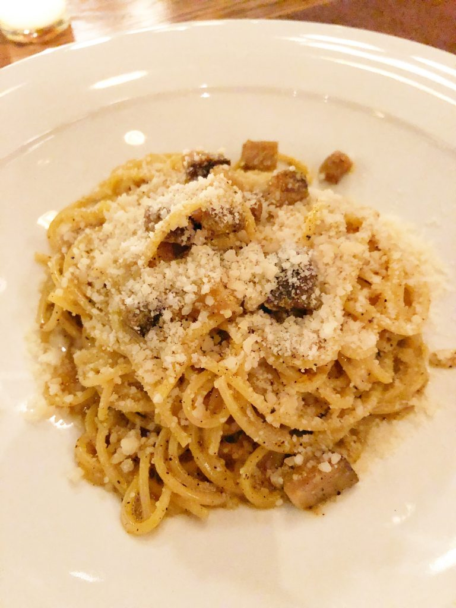

Country Pasta

This low country take on pasta carbonara combines the rich culinary traditions of Italy with the new world. With immigrants to America came their recipes, as they settled in their new country they had to alter the original recipes to make do with what local ingredients were available. The porkbelly replaces the traditional speck in this recipes, leading to a tender and delicious pasta.
For the Pasta
- 2 Punds Pork Belly
- Kosher Salt
- 1/4 Cup Cracked Black Pepper
- 2 Tablespoons Crushed Red Pepper Flakes, plus more for serving
- 2 Cups Lard
- 2 Pounds Dry Spaghetti
- 8 Egg Yolks
- 1 Cup Parmigiano-Reggiano cheese, plus more for serving
Make the Pasta
- Preheat the oven to 325 F
- Season the pork belly with salt, black pepper, and red pepper flakes
- Place the pork belly in a baking dish and cover with lard
- Bake for 4 to 6 hours, until fork tender
- let the pork cool in the fat in the refrigerator overnight
- Remove the pork belly from the lard and seperate the meat from the fat layer
- Cube the meat into a 1/4 inch dice, reserve the pork fat
- Fill a large stock pot with water, season generously with salt and bring to a boil over high heat
- Put 2 tablespoons of the pork fat into a large saute pan over medium high heat, add the pork belly and and crisp so that it has a bit of crust, 7 to 8 minutes
- Put the pasta in the boiling water and cook until al dente, beign tasting the pasta 2 minutes before the cooking instruciton indicate it will be done to avoid overcooked pasta
- In a large serving bowl combine the egg yolk, crisped pork belly, 1 tablespoon salt, black pepper, and red pepper flakes, and two tablespoons of the pasta water. Whisk the ingredients to combine
- Strain the pasta and dump it into the mixing bowl, add 1 cup of cheese and mix well. Serve immediately.